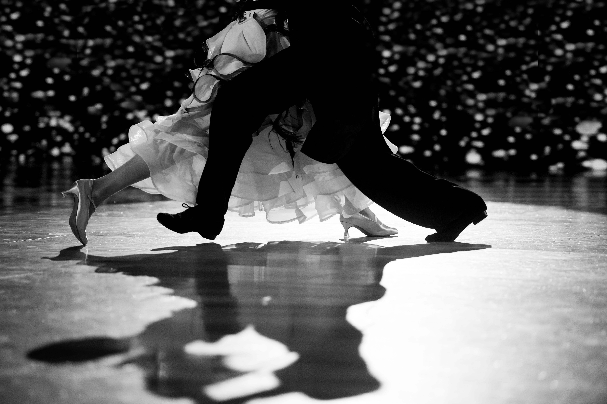

Ballroom dancing is a partnership dance where couples use step-patterns, move rhythmically, and express the characteristics of the music. It was originally practiced in Europe and the United States. Ballroom dancing consists of three main styles all of which have different techniques and focuses. The styles are Standard, Latin, and Smooth.
Standard
You might notice that a few styles have the same dances. That is true in name, however the way these dances are danced, their technique, steps, etc. is very different depending on the style. The Latin and standard dances are danced around the world and thus are collectively called the International style dances, while the smooth dances are danced almost exclusively in the United States and are thus called the American style dances.


Ballroom competitions are usually held in a ballroom. Competitors dance in heats, depending on the round (quarter-final, semi-final, final, etc.) and the size of the competition. Each dance of the style is danced in the series of rounds. For all rounds besides the final, each couple’s goal is to get to the next round. The judges simply write down the couples they wish to see dance again in the next round; they are not ranked until the final. There are typically six to eight couples in the final and each judge ranks all of the couples and those scores are tallied up to get a final ranking. See video below for an example of a Latin competition final.
In the United States ballroom dance is not a well known thing in every state. Most ballroom dancers come from the same states, or international dancers move to those states from their home country.